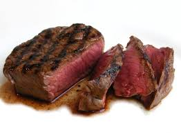

Steak!

Description
An all time favourite and classic
Ingredients
1 (2 pound) flat iron steak
2 1/2 tablespoons olive oil
2 cloves garlic minced
1 teaspoon chopped fresh parsley
1/4 teaspoon chopped fresh rosemary
1/2 teaspoon chopped fresh chives
1/4 cup Cabernet Sauvignon
1/2 teaspoon salt
1 teaspoon ground black pepper
1/4 teaspoon dry mustard powder
Steps
- Place steak inside a large resealable bag.
Stir olive oil, garlic, parsley, rosemary, chives,
red wine, salt, pepper, and mustard powder together in a small bowl.
- Pour marinade over steak in the bag.
Press out as much air as you can and seal the bag.
Marinate in the refrigerator for 2 to 3 hours.
- Heat a nonstick skillet over medium-high heat.
Sear and cook the steak in the hot skillet for 3 to 4 minutes on each side for medium rare,
or to your desired degree of doneness.
An instant-read thermometer inserted into the center should read 130 degrees F (54 degrees C) for medium rare.
- Discard the marinade. Allow the steaks to rest for about 5 minutes before serving.